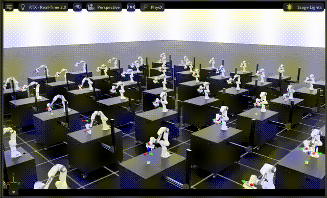

Closed-Loop Policy Inference and Evaluation#
Docker Container: Base (see Installation for more details)
./docker/run_docker.sh
Once inside the container, set the models directory if you plan to download pre-trained checkpoints:
export MODELS_DIR=/models/isaaclab_arena/reinforcement_learning
mkdir -p $MODELS_DIR
This tutorial assumes you’ve completed Policy Training and have a trained checkpoint, or you can download a pre-trained one as described below.
Download Pre-trained Model (skip preceding steps)
hf download \
nvidia/Arena-Franka-Lift-Object-RL-Task \
--local-dir $MODELS_DIR/lift_object_checkpoint
After downloading, the checkpoint is at:
$MODELS_DIR/lift_object_checkpoint/model_1999.pt
Replace checkpoint paths in the examples below with this path.
Evaluation Methods#
There are three ways to evaluate a trained policy:
Single environment (
policy_runner.py): detailed evaluation with metricsParallel environments (
policy_runner.py): larger-scale statistical evaluationBatch evaluation (
eval_runner.py): automated evaluation across multiple checkpoints
Method 1: Single Environment Evaluation#
python isaaclab_arena/evaluation/policy_runner.py \
--viz kit \
--policy_type rsl_rl \
--num_episodes 20 \
--checkpoint_path $MODELS_DIR/lift_object_checkpoint/model_1999.pt \
lift_object
Note
If you train the model yourself, the checkpoint path is typically in the logs/rsl_rl/generic_experiment/ directory.
Replace the checkpoint path with the path to your own checkpoint.
Policy-specific arguments (--policy_type, --checkpoint_path, etc.) must come before the
environment name. Environment-specific arguments (--object, --embodiment, etc.) must come
after it.
At the end of the run, metrics are printed to the console:
Metrics: {'success_rate': 0.81, 'num_episodes': 12}
Method 2: Parallel Environment Evaluation#
For more statistically significant results, run across many environments in parallel:
python isaaclab_arena/evaluation/policy_runner.py \
--policy_type rsl_rl \
--num_episodes 1024 \
--num_envs 64 \
--env_spacing 2.5 \
--viz kit \
--checkpoint_path $MODELS_DIR/lift_object_checkpoint/model_1999.pt \
lift_object
Metrics: {'success_rate': 0.72, 'num_episodes': 1024}
{kind=link}

Method 3: Batch Evaluation#
To evaluate multiple checkpoints in sequence, use eval_runner.py with a JSON config.
Here we evaluate the models you trained yourself.
The checkpoint path should be replaced with the timestamp of your training run in the logs/rsl_rl/generic_experiment/ directory.
1. Create an evaluation config
Create a file eval_config.json:
{
"jobs": [
{
"name": "lift_object_model_1000",
"policy_type": "rsl_rl",
"num_episodes": 1024,
"arena_env_args": {
"environment": "lift_object",
"num_envs": 64
},
"policy_config_dict": {
"checkpoint_path": "logs/rsl_rl/generic_experiment/<timestamp>/model_1000.pt"
}
},
{
"name": "lift_object_model_1999",
"policy_type": "rsl_rl",
"num_episodes": 1024,
"arena_env_args": {
"environment": "lift_object",
"num_envs": 64
},
"policy_config_dict": {
"checkpoint_path": "logs/rsl_rl/generic_experiment/<timestamp>/model_1999.pt"
}
}
]
}
2. Run
python isaaclab_arena/evaluation/eval_runner.py \
--viz kit \
--eval_jobs_config eval_config.json
======================================================================
METRICS SUMMARY
======================================================================
lift_object_model_1000:
num_episodes 1024
success_rate 0.6526
lift_object_model_1999:
num_episodes 1024
success_rate 0.7408
======================================================================
Understanding the Metrics#
The Lift Object task reports two metrics:
success_rate: fraction of episodes where the object reached the target position within tolerancenum_episodes: total number of completed episodes during the evaluation run
A well-trained policy should reach 70–90% success rate. Results will vary with the target range, random seed, and hardware.
Note
For evaluation, omit --rl_training_mode (default): success termination stays enabled so
metrics such as success rate are meaningful. For RSL-RL training, pass --rl_training_mode to
disable success termination.